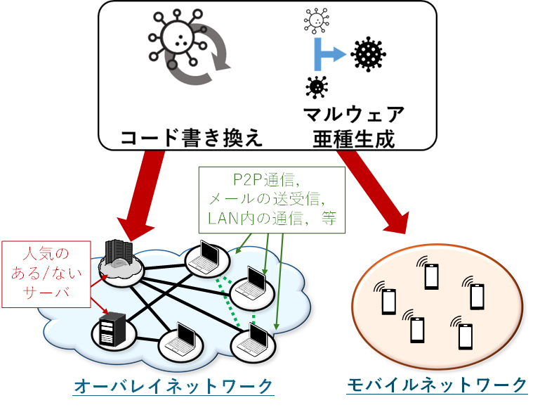

セキュリティとマルウェア対策
スマートフォンやIoT機器の普及により便利な世の中になっていますが，同時に「マルウェア」と呼ばれる悪意あるソフトの脅威も増えています． 本研究では，マルウェアが通信ネットワークや無線通信環境下でどのように広がるかを数理モデルで分析し，感染拡大の仕組みや対策方法を考えます．
エッジコンピューティングとUAV

近年では，よりリアルタイム性が求められるアプリケーションの登場により，ユーザ端末の近くでデータ処理を行うエッジコンピューティング （Edge Computing: EC） の重要性が高まっています． 本研究では，EC環境において，複数の仮想マシン （VM） をエッジサーバ上に柔軟に割り当て，リソースの有効活用やトラフィック分散に加え，障害発生後もサービスを継続できるようなVM再配置・冗長ルート設計手法の構築に取り組んでいます． また，エッジサーバを搭載したUAVによる分散データ処理や，バッテリー管理・効率的な運用手法の研究を進めています．
セキュアな情報共有と分散システム


データの暗号化には暗号鍵が必要となりますが，漏洩等による危険性があります．本研究では，機密データの紛失や盗難を防止するための秘密分散スキームについて研究しています． 秘密分散技術や分散ネットワークを活用した安全な情報共有・復元技術の開発を行っています．
プログラマブルネットワーク


ネットワーク機器の動作を柔軟に変更する技術として，P4というプログラミング言語を使った実装にも取り組んでいます． P4を用いることで，障害検知機能や，異常な通信の早期検出・制限，特定ユーザ通信の優先処理など，ネットワークの状況や要求に応じた多様な制御を実現できます． こうした柔軟な制御機能を活用することで，ミッションクリティカルな通信を安定的に保護しつつ，一般トラフィックの最適な分散やQoS向上を可能にし，将来の多様なサービス需要に対応した持続可能なICT基盤の構築に貢献します．